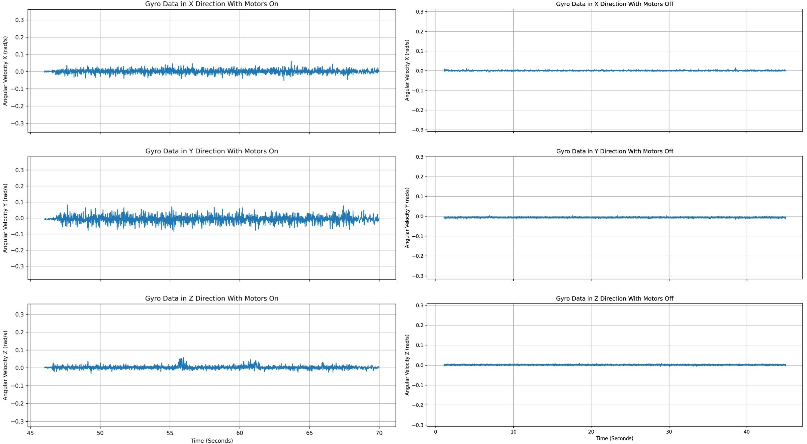
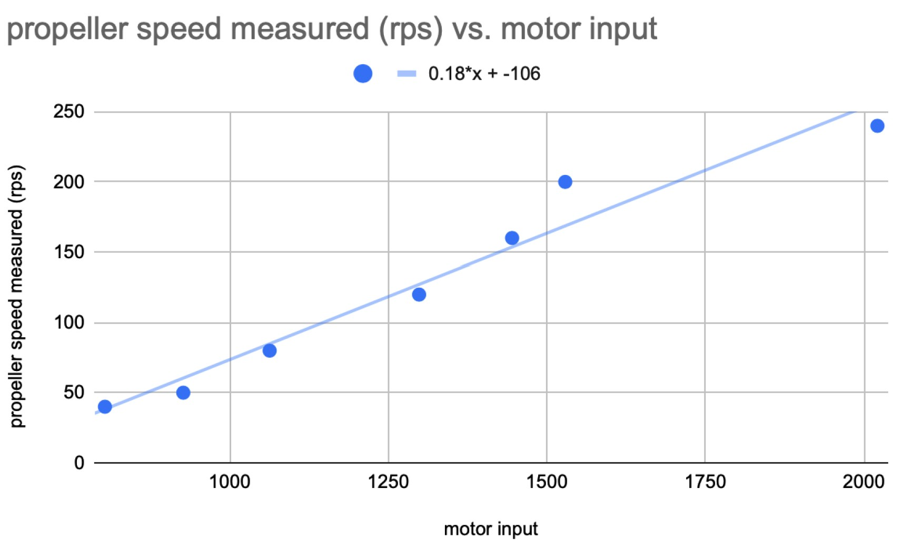
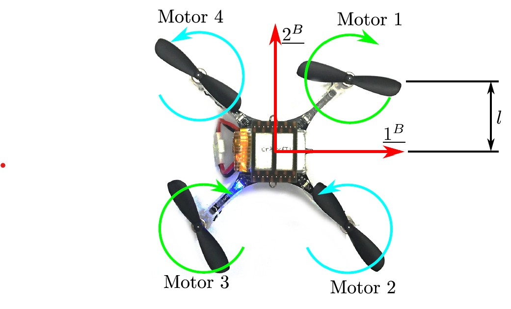
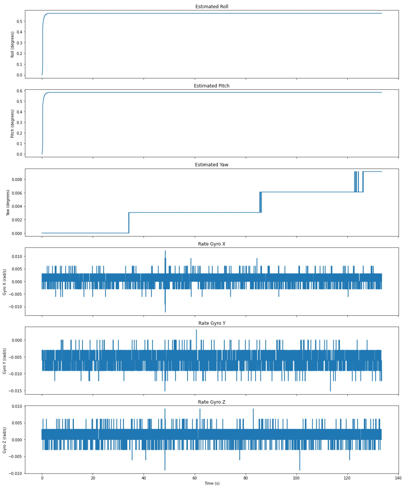
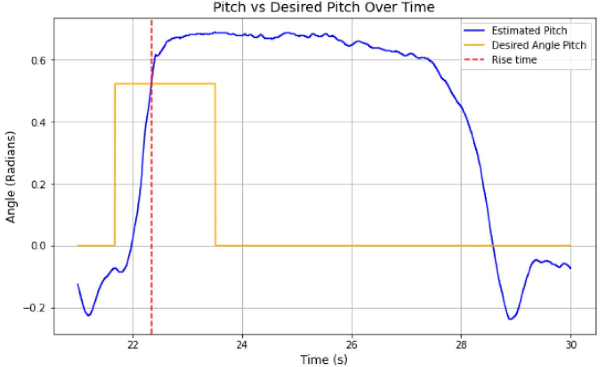

Technical Work
This project required building a full quadcopter flight system from the ground up. Rather than simply flying the drone, the goal was to develop the estimation, control, and motor models needed to achieve stable autonomous flight.
1. Sensor Characterization
Before implementing control, I first analyzed the IMU sensors to understand noise, bias, and drift. With the motors running, the standard deviation of the angular velocity increased significantly due to vibration, which directly affected the estimator performance.

These experiments helped determine how long the estimator could run before drift became too large and motivated the use of accelerometer feedback to correct long-term orientation error.
2. Motor System Identification
To control the quadcopter, I experimentally derived the relationship between PWM command, motor speed, and thrust. Using a tachometer and multiple command inputs, I obtained a linear relationship between PWM and motor speed:
PWM = a + b · ω a = -106 b = 0.18

I then derived the force produced by each motor using a one-axis test rig. The angle of the rig was calculated from the accelerometer:
θ = arcsin(a_z / g) F_motor = (9.81 m_R l_R + 9.81 m_B l) / (4 sin(θ) l)

3. Mixer Equations
After identifying the motor model, I implemented the mixer that converts desired thrust and torques into individual motor commands. The mixer matrix relates total thrust and roll/pitch/yaw torques to the four motors:
[ T ] [ 1 1 1 1 ] [ F1 ]
[ τx ] = [ 0 L 0 -L ] [ F2 ]
[ τy ] [ -L 0 L 0 ] [ F3 ]
[ τz ] [ k -k k -k ] [ F4 ]
This allowed the controller to command roll, pitch, and yaw independently while maintaining stable thrust.

4. Attitude Estimation
I implemented an attitude estimator using gyroscope and accelerometer measurements. The gyroscope provided accurate short-term motion, while the accelerometer corrected long-term drift using a complementary filter.

Experimental testing at ~35° tilt showed that pitch and roll converged consistently across multiple trials, while yaw drifted over time due to the lack of an absolute reference.
5. Controller Testing
After building the estimator, I tuned the closed-loop controller using step-response testing and instability experiments. I tested both stable and intentionally unstable controllers to understand how gain selection affected oscillations and response time.
